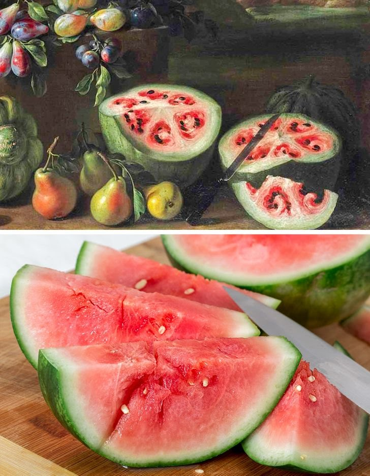

Não é segredo que vários legumes e frutas que comemos hoje podem ser bem diferentes de antigamente. A humanidade conseguiu aperfeiçoar diversos tipos de alimentos e hoje conseguimos avaliar seu gosto e aparência. Neste post você vai ver como eram as bananas, berinjelas e outras delícias naturais antes da intervenção humana.
MELANCIA

A julgar por esta pintura de Giovanni Stanchi (século 17), a melancia era muito diferente da que saboreamos hoje. Com a ajuda do melhoramento de plantas, os pesquisadores conseguiram se livrar das nervuras não comestíveis, que anteriormente se encontravam em excesso. Bem, claro, o sabor também deve estar bem diferenciado.
BANANA
Os habitantes de Papua-Nova Guiné, e do sudeste da Ásia já se alimentavam de banana há 10 mil anos. No entanto, o cultivo de banana começou há 7 mil anos. Mas o sabor e o formato é bem diferente da fruta que trazemos para nossa mesa hoje em dia. As bananas atuais são um híbrido entre a banana malaia (Musa acuminata) e a banana macho (Musa balbisiana), com uma melhora no sabor e na aparência.
BERINJELA
Os primeiros legumes foram cultivados na China e não eram tão parecidos com os atuais. Eles eram cheios de espinhos, pequenos, tinham todos os tipos de cores, do amarelo ao azul. Demorou muito tempo para o legume ter o formato de hoje e se livrar dos espinhos.
PESSÊGO
Anteriormente, os pêssegos eram completamente diferentes. Eles eram mais parecidos com uma cereja do que com a fruta grande e suculenta, que hoje chamamos de pêssego. Os primeiros começaram a ser consumidos como alimento na China há cerca de 4 mil anos a.C. Desde então, a fruta sofreu mudanças consideráveis tanto no sabor como no seu formato.
PEPINO
Os ancestrais do pepino tinham espinhos e eram quase completamente compostos de sementes. Mas o mais importante é que esses legumes eram venenosos e cultivados para fins medicinais. O pepino como alimento surgiu na Índia há mais de 6 mil anos.
ABACATE
O abacate surgiu na civilização asteca no século 3 a.C. sob o nome de ahuacatl, traduzido da língua Nahualt como “testículo”, talvez por causa de sua semelhança com a glândula sexual masculina. Em primeiro lugar, sua semente era esmagada e misturada com fuligem para depois ser usada como remédio. Precisamente essa mesma semente ocupava quase 80% do abacate. A antiga fruta não se compara ao abacate atual.
TOMATE
A princípio, os tomates pareciam pequenas bagas escuras. A terra natal do tomate são as Américas Central e do Sul. Na Europa por muito tempo foram considerados venenosos e cultivados como plantas decorativas.